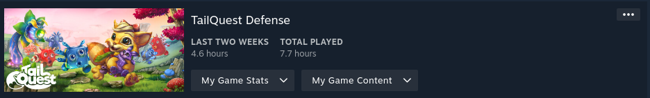

Why TailQuest Defence?
I stumbled upon this game on the Linux Gaming subreddit and immediately added it to my wishlist. I make it a point to support games featured on the subreddits I follow, saving them for future play. The game struck me as similar to Dungeon Defenders, a title I sunk a lot of time into back in the early 2010s. I'm a big fan of tower defense games. My therapist advised me to inject some fun into my life, so I decided to grab this game on impulse.
Story
I won't lie, the story didn't really grab me. I get the gist of it, but I couldn't tell you the names of the characters or the creatures involved. You're some sort of creature, and your job is to fend off other creatures using color-coded plants. The "enemy creatures" are out to snatch your offspring, and you're the last line of defense. Honestly, it's not a big deal in the grand scheme of things.
Audio & Video
The audio and graphics of the game are unremarkable. However, they blend into the background and don't distract from the gameplay, which is a plus for elements that don't stand out. Make no mistake, however, the visuals are cute. I love the character design of all the moving parts. The graphics overall are just simply nothing to write home about.
Gameplay Mechanics
Overview
TailQuest is played from a third-person perspective and sticks to the classic tower defense formula. You set up defensive towers along a predetermined path for the enemies. Eliminating these enemies earns you gold, which you use to upgrade and plant more towers. The game features just two enemy types, each with three variations: standard, fast, and tanky. Your towers are plants, and you can only place them in designated nest spots. You can also plant extra seeds in the soil to create landmines in both color types, serving as a secondary defense that detonates upon contact. Besides towers and bombs, you have a ground pound attack that damages enemies, with more damage inflicted the higher you drop from. Each map is also dotted with secrets, often rewarding you with gold and free plants.
Controls & Camera
The controls really drag down the experience. The camera also adds to the problem, as it's linked with the control issues. Your character can't jump very high due to the ground pound feature. This often leads to getting stuck on terrain, as the jumps aren't high enough. The character movement feels slippery and floaty, which isn't ideal for this game. You need to make precise choices with towers and interactive items. But sliding past them or dealing with two close interactables can be really annoying.
Replayability & Final Thoughts
These are usually two different sections, but for this game, they can be combined into one. There's not much reason to play again after the first completion. Nothing new unlocks after beating the game. You can aim for three stars on each map, but that's likely achievable on your first playthrough. Overall, I'd recommend skipping this game. If you've played tower defence games before, this won't offer any new challenges. But for young gamers or genre newcomers, it might be worth a try.
Should you complete TailQuest Defence?
You'll get all achievements by playing it just once. They feel like they were added simply because games usually have them. As a completionist, I wouldn't seek out this game specifically. However, if you already own it, it's an easy way to boost your 100% game completion stats.
Stats Gallery
Complete!
